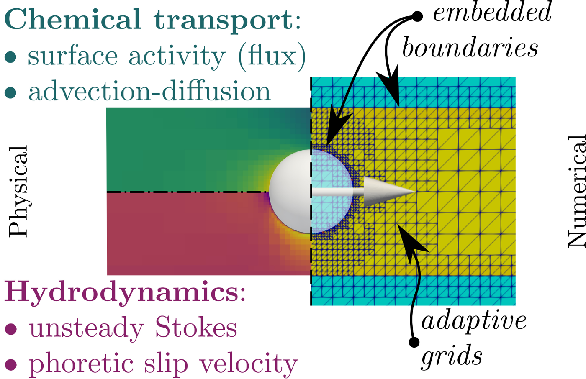
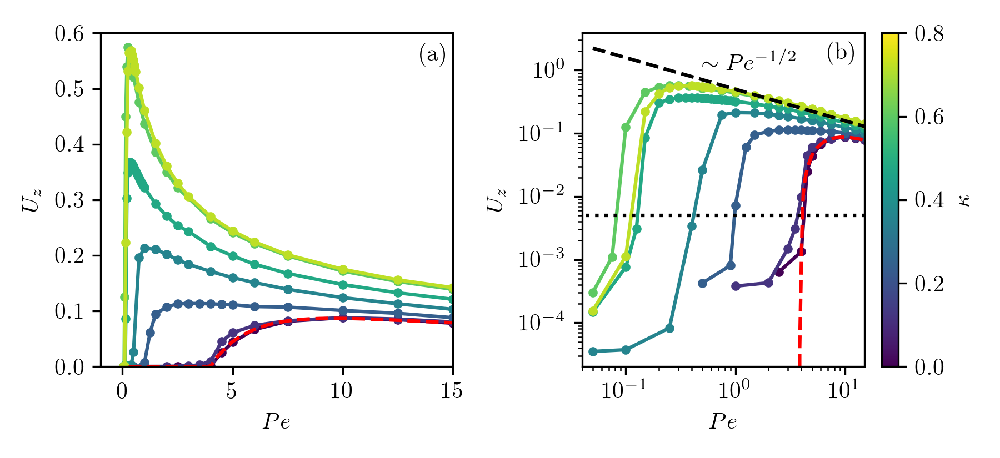
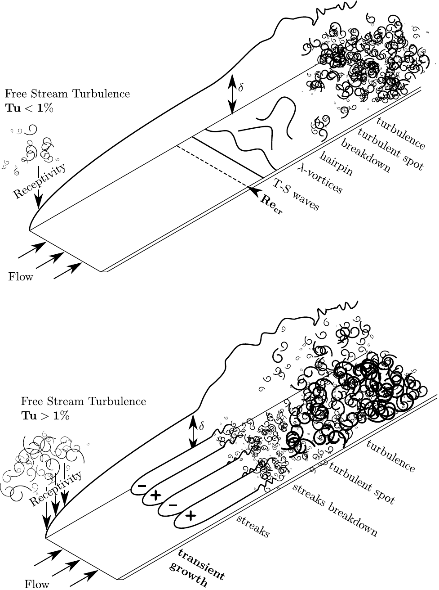
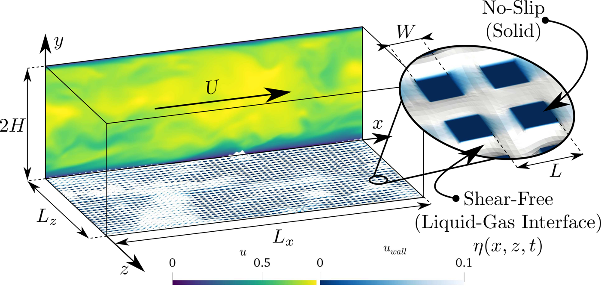
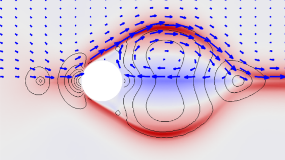
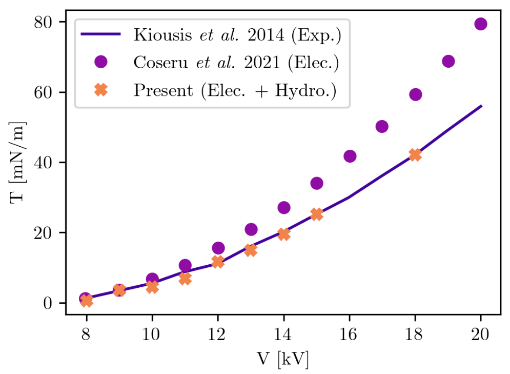
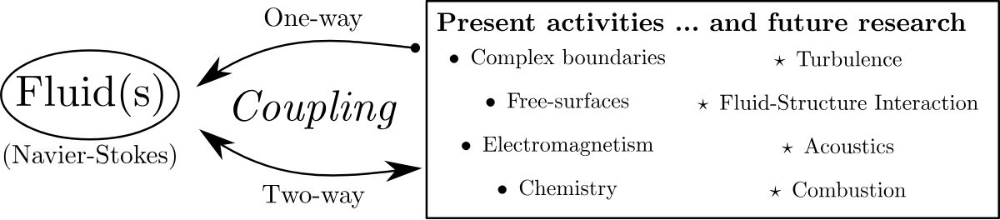
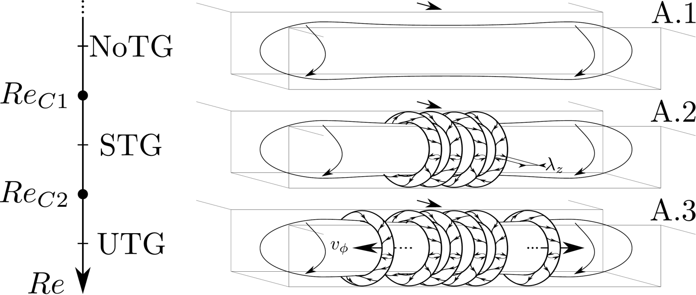

Flows coupled to something else — living cells, active colloids, trapped air, an electric field, a moving wall. I write the smallest model that keeps the coupling, and ask the questions of hydrodynamic stability.
The experiment, then the cartoon. A Petri dish seen from above and a thin cell seen from the side: the plumes form in minutes (experiments H. de Maleprade and A. Huyghues-Despointes). Then the engine, drawn: one cell swims up; many gather under the free surface; the heavy layer falls in a plume. From my JMC 2026 talk.
Swimming micro-algae gather under the surface and fall back as plumes: a living fluid that picks its own pattern — and a shaped floor that can pick it for them.
With Hélène de Maleprade (experiments, ∂'Alembert), M. Givaudan (∂'Alembert; C. R. Physique 2026), A. Huyghues-Despointes (Petri-dish experiments), Pier Giuseppe Ledda (University of Cagliari; complex interfaces, BRIDGE visit 2026). Internship open for 2027 — see Open positions.
Read more
Chlamydomonas are swimming micro-algae, slightly denser than water, that swim upwards. Gathered under the surface, the suspension becomes top-heavy and overturns into plumes and rolls: bioconvection, first drawn by Wager in 1911. In the experiments at ∂'Alembert, Hélène changes the environment — the light, the depth, the bathymetry of the cell — and the plumes answer: over a zigzag floor they are born in the troughs and end up on the crests.
On my side I write continuum models of the suspension (cell density, orientation, flow) and simulate them in 2D and 3D. Without noise the model lingers for a very long time before organising; with noise it falls at once into the state seen in the experiments — which points to an instability, analysed with the tools of hydrodynamic stability: the base state with the cells piled under the surface, its eigenmodes and growth rates on flat, sloped and zigzag floors. An agent-resolved model (a few thousand swimmers coupled through the fluid) checks the continuum one. Next: coupling the cells' own oxygen consumption to the flow — what happens when the algae make their water anoxic.
Experiment vs model on the zigzag floor (JMC 2026): side view at 60 min and space–time diagram of the plumes for the experiment (left), the 3D simulation (centre) and the 2D simulation (right). Orange lines mark the crests, dotted blue the troughs — the plumes end up on the crests in all three.One cell (≈ 10 µm, swims up at ≈ 100 µm/s) — and the plume a crowd of them builds, a hundred times bigger.
Phoretic active matter — self-propelled colloids and the walls around them
synthetic microswimmers · with Sébastien Michelin (LadHyX, École Polytechnique)
A chemical compass. The same particle at a cross junction, at Pe = 15 and Pe = 30 (red and blue trajectories): the solute it leaves behind decides which branch it takes.
A particle that cannot swim on its own starts to, once a wall breaks the symmetry: the bifurcations of synthetic swimmers, one and many.
With Sébastien Michelin (LadHyX, École Polytechnique), Ambre Palotai (M2 internship 2024–25, hydrodynamic interactions between swimmers).
Read more
A phoretic colloid turns a chemical gradient at its own surface into motion: it emits or consumes a solute, the solute drives a slip velocity along the surface, the slip propels the particle. A Janus particle carries its asymmetry built in. An isotropic one cannot swim in an unbounded fluid — nothing picks a direction — but it can be unstable: above a critical Péclet number the solute it emits is swept back and the symmetric state gives way to a swimming one. My postdoc at LadHyX put such a particle in a tube. Confinement screens the hydrodynamics, lowers the threshold and selects the direction: the particle swims along the axis, at a speed set by the solute difference between its front and its back (JFM 2022).
I compute the base states, their stability and the swimming branches with a Stokes + advection–diffusion solver on adaptive grids with embedded boundaries (Basilisk) and with axisymmetric spectral methods; the current question, with S. Michelin, is which secondary bifurcations follow — steady, oscillatory, non-axisymmetric "spiralling" motions. At a junction the same particle picks a branch: the solute it leaves behind is a chemical compass. From one swimmer to many: with a minimal three-force model (tHree) I look at how hydrodynamic interactions between swimmers are screened by walls and at the collective states they produce — phototactic drift, fingering, and the artificial counterpart of the bioconvection plumes.

Physics and numerics of a confined phoretic swimmer: surface activity and advection–diffusion of the solute, unsteady Stokes flow with a phoretic slip — solved on adaptive grids with embedded boundaries.An isotropic active colloid in a tube at Pe = 30: the solute it emits (colour) is swept back, and the particle swims.

Swimming speed Uz against Pe for confinement ratios κ = 0.2 … 0.8: the tighter the tube, the lower the threshold.
Underwater superhydrophobic surfaces (U-SHS) — trapped air and drag reduction
The idea, in 24 seconds. First the real thing — a water drop rolling off a lotus leaf, filmed in 2019 — then the sketch: the fern Salvinia keeps a layer of air under water with its egg-beater hairs; copy the trick on a hull and the water slips.
Air trapped on a textured wall lets water slip. The question is when the air survives the flow.
With Jean-Christophe Robinet and Stefania Cherubini (DynFluid, Arts et Métiers), Malo Walmetz (M2 internship 2026, Basilisk). Internship open for 2027 — see Open positions.
Read more
The water fern Salvinia keeps a layer of air on its hairs when submerged. A textured, water-repellent wall does the same: it traps a thin layer of air, the plastron, between the solid and the water. The flow slips over the gas pockets, friction drops, and the idea of an air-lubricated ship hull is not far away. During my PhD I showed how much the way the surface is modelled — a homogeneous slip wall, or a textured, heterogeneous one — changes the laminar–turbulent transition of a channel (JFM 2019, 2020, Mathematics 2021).
Most models freeze the air–water interface in place. In reality the trapped air responds to the flow — it deforms, it can be dragged out of its cavities — and the flow responds back. TARAS builds a two-way wall model for this coupling, from the microscopic gas pocket (deflection η, surface tension σ) to the transition of the whole channel, to predict when drag reduction survives and when it is lost.
Taras rides the wave on a Salvinia leaf.
Laminar–turbulent transition — over complex surfaces
my PhD subject · DynFluid, Arts et Métiers · direct numerical simulation (Nek5000)
Same disturbance, four walls. K-type transition in a channel for the four wall models side by side — no-slip, homogeneous slip, slip–no-slip stripes, stripes with moving interfaces — with the friction Reynolds number Reτ(t) that jumps when the flow turns turbulent (JFM 2020).
Same disturbance, four walls: how a superhydrophobic surface changes the way a channel flow becomes turbulent.
With Jean-Christophe Robinet and Stefania Cherubini (DynFluid, Arts et Métiers), Michele Alessandro Bucci (synthetic forcing). The textured-wall models are the starting point of TARAS.
Read more
A laminar channel flow is linearly stable far beyond the Reynolds number at which it turns turbulent in practice: transition is a question of disturbances — which ones the flow is receptive to, how they grow, exponentially or transiently through the lift-up of streaks, and how they break down. The two classic paths are sketched on the right: at low free-stream turbulence, Tollmien–Schlichting waves, Λ-vortices, hairpins and turbulent spots (the K-type scenario); at high free-stream turbulence, streaks that grow transiently and break down (the bypass route).
My PhD asked what a superhydrophobic wall does to each path. Modelled as a homogeneous slip length, slip delays the K-type transition — by how much depends on the route (JFM 2019). Modelled as the real texture, alternating slip and no-slip stripes, the picture changes; letting the air–water interfaces move with the flow changes it again (JFM 2020). A synthetic forcing that mimics free-stream turbulence lets the same code trigger the bypass route in a controlled way (JCP 2019), and nonlinear optimal perturbations give the smallest seed that trips the flow (Mathematics 2021). Simulations on up to 7·107 grid points, 3·106 CPU hours (GENCI).
Transition over a textured wall, in time. From t = 28 to 200: the wall velocity (colour) and the vortical structures (red) as streaks form and break down, and Reτ climbs to its turbulent value.The bypass route, on demand. A synthetic forcing f(x, t) mimics free-stream turbulence (Tu = 0.05 %): streaks, then hairpins, then transition (JCP 2019).

Two roads to turbulence: Tu < 1 % (top) and Tu > 1 % (bottom).

Four ways to model the wall: no-slip (PPF), homogeneous slip length (HSL), slip–no-slip stripes (SNS), stripes with moving interfaces (MVB).
Plasma thrusters — the ionic wind of corona discharges
postdoc at IMFT, Toulouse · electro-hydrodynamics · FreeFem++ / StabFem
Two global modes of the electro-hydrodynamic base flow (streamwise velocity, FreeFem++/StabFem): where the ionic-wind jet first goes unsteady.
Thrust with no moving parts: the ionic wind of a corona discharge, simulated fully coupled, and its stability.
With David Fabre, Franck Plouraboué and Christophe Airiau (IMFT, Toulouse).
Read more
Apply a high voltage — 10 to 20 kV — between a thin wire and a collector in air. Near the wire the field ionises the air (a corona discharge); the ions drift towards the collector, collide with neutral molecules and drag the air along: an ionic wind, a thrust without any moving part. Silent, solid-state propulsion for small aircraft is the application. The physics is a coupled problem — electrostatics (Poisson), charge transport (drift, diffusion, convection) and Navier–Stokes, each feeding the other through the Coulomb force and the convection of charge.
At IMFT I built the fully coupled solver in FreeFem++, on adaptive meshes that resolve the 100-µm emitter inside a centimetre-scale domain, and used it for three things: the thrust–voltage law, checked against experiments and against electrostatic-only models; the structure of the ionic-wind jet and its wake behind the emitter; and the global stability of the electro-hydrodynamic base flow — its eigenmodes, and the onset of unsteadiness (AIAA J. 2024).

The ionic wind around the emitter wire: velocity (colour), vectors and streamlines, Re = 2150.

Thrust against voltage: experiment (Kiousis et al. 2014), electrostatic model (Coseru et al. 2021), and the fully coupled electro-hydrodynamic model.
Stability of coupled flows — linear stability, bifurcations, transition
the common toolbox · global stability · nonlinear optimal perturbations
Helical structures in the fully three-dimensional open cavity flow, after its successive bifurcations (JFM 2018).
One toolbox behind everything above: base states, eigenmodes, adjoints, optimal perturbations, bifurcations.
With Jean-Christophe Robinet and Stefania Cherubini (DynFluid, Arts et Métiers), Jean-Christophe Loiseau, François Lusseyran and Luc Pastur (open cavity), Michele Alessandro Bucci, David Fabre, Franck Plouraboué and Christophe Airiau (IMFT, Toulouse), Pier Giuseppe Ledda (Cagliari).
Read more
Everything on this page is a stability problem in disguise. Start from a steady base state — a laminar channel, a cavity flow, a suspension at rest with its cells piled under the surface, a gas pocket at equilibrium — and add a small perturbation. The linearised equations say whether it grows: an eigenvalue with positive real part, the wavelength and frequency of the growing mode, and its shape. In a global analysis the base flow is fully two- or three-dimensional and the eigenproblem is solved numerically, by Arnoldi iterations on a time-stepper (Nek5000) or with finite elements (FreeFem++/StabFem). Adjoint modes give receptivity and sensitivity — where a small change in the problem changes the answer most. When the linear picture is not enough, nonlinear optimal perturbations (a variational, adjoint-based optimisation) find the smallest disturbance that trips the flow, and continuation follows the branches through the sequence of bifurcations, up to transition.
Where the coupling enters, so far: a slip or textured wall (transition in channels with superhydrophobic walls); a fully three-dimensional open cavity and its successive bifurcations, compared with experiments (JFM 2018); the receptivity of a boundary layer to free-stream disturbances, mimicked by a synthetic forcing (JCP 2019); an electric field — the ionic wind of a corona discharge, a coupled electro-hydrodynamic problem (plasma thrusters); a chemical field around a phoretic particle; a moving or deformable boundary (ALE and embedded-boundary formulations, fluid–structure interaction); and a swimming population, in bioconvection.

Different subjects, a similar approach: the fluid, coupled one-way or two-way to a boundary, a free surface, an electric field, a chemical field — and the couplings still to come.

The sequence of bifurcations of the open cavity flow as Re increases, sketched: no Taylor–Görtler vortices, then steady ones (ReC1), then unsteady ones (ReC2).
Tools, in Basilisk — building blocks for the stability of coupled flows
Fingering. 64 tHree pullers in a periodic box, Stokes flow: the regular lattice breaks into fingers (vorticity in colour, swimmers in black, velocity vectors). From fingering.c on my sandbox, where the full-resolution movie runs.
Open-source building blocks for the stability of coupled flows, written with my students.
With the students of the alumni page, each with a sandbox of their own: Louise Gally, Malo Walmetz, Jordan Merrifield, Ambre Palotai; Antoine Hajczak, Jean-Christophe Robinet and Mathilde Tavares, who co-supervised them; Arthur Ghigo (embedded boundaries); Stéphane Popinet (∂'Alembert).
Read more
Basilisk is the free solver for partial differential equations on adaptive grids developed at ∂'Alembert by Stéphane Popinet. Its wiki, the sandbox, is where users publish their code, with the results compiled and run on the server: every page is a reproducible test case. I use Basilisk to put the coupled flows above into one framework, and I develop the tools their stability analysis needs — then share them so that students and colleagues can build on them.
Moving embedded boundaries Forces and torques on bodies that move with the flow (re-adapted from A. Ghigo's implementation): sedimenting, force- and torque-free cylinders in shear flow.
Slip and Robin conditions Navier slip on embedded geometries, and Robin conditions with A. Palotai and M. Walmetz — the wall model of U-SHS. Validated against Legendre et al. 2009.
Plastron A cylinder wrapped in a gas bubble, a notched cylinder holding a bubble: two-phase flow around a superhydrophobic body.
tHree swimmers A three-force model of a microswimmer: single swimmer, phototaxis in a light gradient, fingering, and bioconvection plumes.
Selective frequency damping Unstable base states for a stability analysis (Åkervik et al. 2006): Kármán street, sphere wake, Kelvin–Helmholtz — by Louise Gally. picture of the month
Two-phase flow on embedded boundaries Contact angles, contact points and their velocities tracked on an embedded wall; capillary rise with Navier slip, sessile drops — by Jordan Merrifield with Mathilde Tavares.
Validation and pedagogy A quantitative Kármán test (drag, lift, Strouhal number against the literature), a darcs tutorial, 1D advection–diffusion, an instrumented plane Couette flow.